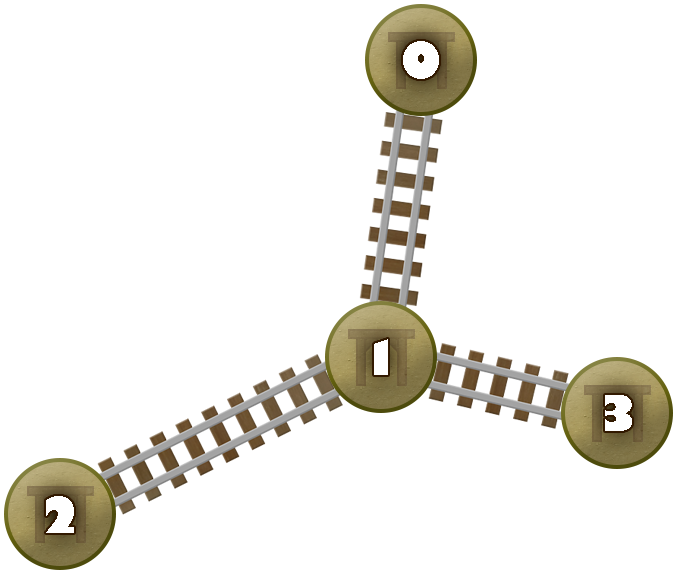

Lampiran dari soal ini bisa diunduh di sini.
Terdapat sebuah tambang tembaga berbentuk pohon dengan $N$ ruangan, dinomori dari $0$ sampai $N - 1$, dan $N - 1$ rel, dinomori dari $0$ sampai $N - 2$. Rel $i$ ($0 \le i \le N - 2$) menghubungkan ruangan $U[i]$ dan $V[i]$.
Anda mengoperasikan sebuah kereta tambang yang bergerak antarruangan menggunakan rel-rel yang ada. Kereta tambang dioperasikan menggunakan $M$ tombol, dinomori dari $0$ sampai $M - 1$ dari kiri ke kanan. Tombol $j$ ($0 \le j \le M - 1$) akan membawa kereta tambang ke ruangan $A[j]$. Ketika kereta tambang sedang berada di ruangan $u$, Anda bisa menekan tombol yang membawa Anda ke ruangan $v$ jika dan hanya jika $u$ dan $v$ dihubungkan oleh sebuah rel. Kereta tambang bisa menjelajahi seluruh ruangan, artinya untuk suatu ruangan $i$ ($0 \le i \le N - 1$), terdapat satu (atau lebih) tombol yang membawa Anda ke ruangan $i$.
Sebagai operator kereta tambang, terdapat protokol keselematan yang harus Anda taati. Anda harus mengoperasikan kereta tambang menggunakan satu tangan yang selalu memegang tombol. Ketika Anda ingin bergerak, Anda akan memilih sebuah tombol yang bisa Anda tekan, menekannya, lalu tangan Anda tetap memegang tombol yang baru ditekan. Gerakan berisiko adalah ketika Anda menggerakkan tangan Anda ke arah kiri, atau lebih formalnya: anggap tangan Anda sedang memegang tombol $a$ dan Anda memutuskan untuk menekan tombol $b$, maka gerakan tersebut berisiko jika dan hanya jika $b < a$. Total risiko adalah banyaknya gerakan berisiko yang Anda lakukan pada keseluruhan navigasi. Awalnya, kereta tambang berada di ruangan $0$ dan tangan Anda memegang tombol $0$. Anda dijamin bahwa $A[0] = 0$.
Terdapat sederetan ruangan $S$ sepanjang $L$ yang harus Anda kunjungi dalam urutan tersebut. Dengan kata lain, Anda harus pertama mengunjungi ruangan $S[0]$, kemudian ruangan $S[1]$, kemudian ruangan $S[2]$, dan seterusnya, dan akhirnya ruangan $S[L - 1]$. Anda juga dijamin bahwa $S[k] \neq S[k + 1]$, untuk semua $0 \le k \le L - 2$.
Anda harus mencari total risiko minimum setelah Anda mengunjungi sederetan ruangan $S$.
long long min_risk(int N, int M, int L, std::vector<int> U, std::vector<int> V, std::vector<int> A, std::vector<int> S)
Perhatikan pemanggilan berikut.
min_risk(4, 6, 3, [1, 0, 1], [2, 1, 3], [0, 3, 2, 1, 3, 1], [0, 2, 3])
Tambang tembaganya bisa diilustrasikan sebagai berikut.

Anda bisa menggerakkan kereta tambang sebagai berikut.
Anda mengunjungi sederetan ruangan tersebut dengan total risiko sebanyak $1$. Tidak terdapat cara lain untuk mengunjungi sederetan ruangan tersebut dengan gerakan berisiko yang lebih sedikit. Oleh karena itu, prosedur harus mengembalikan $1$.
Perhatikan pemanggilan berikut.
min_risk(5, 9, 2, [0, 1, 2, 3], [1, 2, 3, 4], [0, 2, 4, 1, 3, 1, 4, 2, 0], [4, 2])
Awalnya, Anda memegang tombol $0$, lalu Anda menekan tombol $5$, $1$, $4$, $2$, $4$, $7$ secara berturut-turut. Total risikonya adalah $2$ dan tidak terdapat cara lain untuk mendapatkan gerakan berisiko yang lebih sedikit. Oleh karena itu, prosedur harus mengembalikan $2$.
Contoh grader membaca masukan dalam format berikut:
Contoh grader mencetak jawaban Anda dalam format berikut:
min_risk.